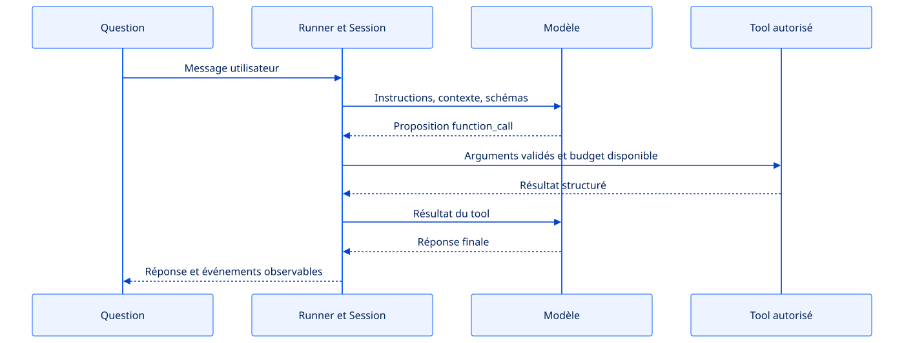
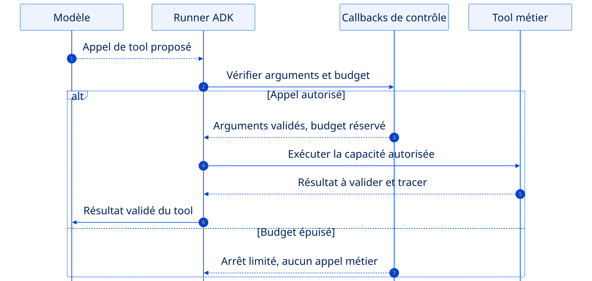

Google ADK en action.
Un agent sous contrôle.
Deux tools, une exécution observable et un serveur MCP local. Le runtime utilisé en S2 devient explicite.
L’agent choisit une action. Votre code garde la décision finale.
Deux capacités
Entrées validées, sorties bornées, erreurs explicites.
Cinq tools max.
Chaque appel apparaît dans une trace observable.
Lecture seule
Aucun SQL, shell, secret ou écriture arbitraire.
Observer la démo, puis contrôler ses décisions.
Une démo ADK locale et deux tools.
Ouvrir tp/s3-agents-mcp/adk_demo/ : agent, runner et serveur MCP.
Vos capacités métier, typées.
Partir de search_library et de l’historique ; garder des entrées bornées et des sorties explicites.
Les garde-fous et leurs tests.
Faire respecter cinq tools, six appels modèle et trente secondes. Rendre l’arrêt explicable.
Retrouvez ADK et branchez vos capacités métier.
Rejouer les tests S2
Le chat fake et le RAG doivent encore fonctionner.
Choisir deux actions
Exemples : rechercher, calculer, filtrer, lire un historique.
Écrire les limites
Ce que chaque tool peut faire… et surtout ne pas faire.
Installation cumulative
S3 utilise encore ce qui a été construit en S2.
L’Agent décrit ce que l’assistant peut faire.
root_agent = Agent(
name="music_discovery",
model=build_adk_model(),
instruction="Réponds avec les outils autorisés.",
tools=[get_listening_history,
catalogue],
)- Instructions
Le rôle et les règles exprimées au modèle. - Modèle
Cohere, Gemini ou une simulation explicite. - Tools
Les seules capacités exposées à l’agent.
Agent ≠ modèle. Le modèle propose un appel ; l’application contrôle son exécution.
Le Runner fait circuler messages et résultats.

Flux d’exécution simplifié. Les événements rendent visibles les échanges ; ils ne dévoilent pas le raisonnement caché du modèle.
Le contexte d’exécution a une durée de vie.
Une session ADK
sessions = runner.session_service
session = await sessions.create_session(
app_name="s3_discovery",
user_id="local",
)Messages et état d’une exécution, isolés par session.
- Starter / CLI
Une session mémoire éphémère par question. - ADK Web
Des sessions de développement conservées localement. - Données métier
Catalogue, documents et règles restent dans l’application.
L’historique affiché par Streamlit n’est pas automatiquement une mémoire transmise au modèle.
Une trace raconte les échanges exécutés.
Un appel proposé n’est pas encore un tool exécuté. Une trace permet de vérifier nom, arguments, résultat et nombre d’appels.
ADK Web permet d’inspecter un échange.

- Chat
Envoyer la question de test. - Events / Traces
Repérer appels, résultats et réponse finale. - State
Identifier le contexte de la session.
uv run adk web tp/s3-agents-mcp/adk_demo --port 8001
FunctionTool expose une fonction typée et validée.
Verbe + objet
search_catalog, pas do_everything.
Schéma strict
Types, champs obligatoires, bornes et valeurs autorisées.
Petit résultat
Données utiles, nombre de résultats et erreur actionnable.
Partez d’un tool pur avant de le confier à l’agent.
Rejouer la démo fournie
Lancer le script local et lire sa trace. Le profil fake montre un plan déterministe, pas une décision intelligente.
Typer une capacité de votre domaine
Arguments courts, validation dans la fonction et résultat sérialisable. Tester la fonction directement.
Exposer et observer
Envelopper avec FunctionTool ; ajouter à la liste autorisée. Dans ADK Web, relier appel, résultat et réponse finale.
Décider → valider → exécuter → tracer → recommencer.
allowlist
Une terminaison doit toujours être compréhensible.
Le Runner reçoit une réponse finale après zéro ou plusieurs tools.
Un budget de tools, d’appels modèle ou de temps est atteint.
Tool inconnu, argument invalide ou exécution impossible.
Trois budgets distincts protègent le parcours.
| Budget | Contrôle | Ce qu’il borne |
|---|---|---|
| 5 tools | Callback avant chaque appel | Les outils réellement exécutés, même en parallèle |
| 6 appels modèle | RunConfig(max_llm_calls=6) | Les décisions successives du modèle |
| 30 secondes | asyncio.timeout(30) | La durée totale de l’exécution |
Un appel modèle peut proposer plusieurs tools. Une consigne « cinq étapes maximum » ne suffit pas : la limite s’applique avant l’effet.
completed : réponse finale · limited : budget atteint · failed : erreur explicite.
Une proposition du modèle ne vaut pas autorisation.

Les callbacks refusent les arguments invalides et réservent le budget avant l’effet métier. Flèche pleine : appel ; pointillés : retour.
Épuisez le budget avec un scénario contrôlé.
Créer un modèle de test qui insiste
Faire proposer plus de cinq tools. Compter les appels effectivement exécutés, pas seulement les événements reçus.
Séparer les trois limites
Compteur de tools, maximum de six appels au modèle et délai global de trente secondes : chacun a son test.
Tester aussi la frontière MCP
Arrêter le serveur ou retourner une sortie mal formée. Valider la forme reçue et produire une erreur publique traçable.
Un protocole relie des capacités autorisées.

McpToolset découvre les outils du serveur. tool_filter=["search_library"] expose uniquement le catalogue en lecture seule. Le serveur reçoit le chemin du jeu synthétique, aucune clé LLM.
MCP transporte un appel. Il ne donne pas tous les droits.
Lancer le serveur local
Un processus stdio, une fixture synthétique, zéro secret.
Autoriser un nom précis
Le client possède une allowlist de tools MCP.
Valider la sortie
Traiter toute réponse MCP comme une entrée externe.
Interdictions
- pas de requête SQL libre ;
- pas de commande shell ;
- pas d’écriture de fichier ;
- pas de secret dans les arguments.
Montrez le chemin heureux puis deux garde-fous.
Succès
Question → tool autorisé → réponse finale + trace.
Limite
Modèle simulé qui propose un sixième appel de tool.
Refus
Tool inconnu ou argument hors contrat.
L’agent agit dans une boîte clairement délimitée.
Vous avez construit
- deux tools métier validés ;
- un Runner ADK et cinq tools maximum ;
- trois états de terminaison ;
- un appel MCP en lecture seule.
À conserver pour S4
- Agent, Runner, Session et Event ;
- la trace des exécutions ;
- les allowlists ;
- les erreurs explicites.
À vous : un agent observable et borné.
- Rejouer et lire la démo
Repérer Agent, Runner, Session, événements et tools dans le dossier adk_demo.
- Adapter deux tools métier
Typer et tester les fonctions avant FunctionTool ; garder un résultat petit et sérialisable.
- Relier un tool par MCP
Filtrer les noms autorisés, valider entrées et sorties ; tester le serveur indisponible.
- Forcer les limites
Cinq tools, six appels modèle, trente secondes ; tracer l’arrêt et ses causes.